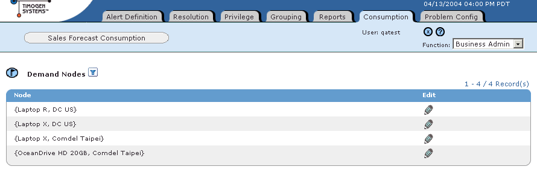
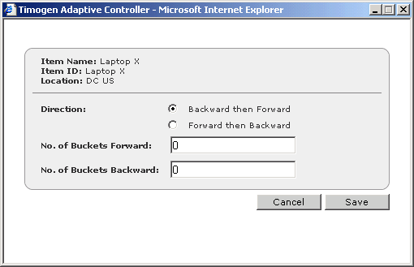

Timogen Web Site
Voice: (650) 903-9888
Fax: (650) 903-9327
info@timogen.coms
Editing Demand Node Consumption Configuration
Only users who have Business Admin function can edit demand node consumption configuration.
To edit demand node consumption configuration1 In the Function drop-down list, select Business Admin.2 Click the Consumption tab. The Sales Forecast Consumption page appears.3 Click for the demand node you want to edit. The Demand Node dialog box appears.4 Make any desired changes to the demand node consumption configuration:Sales forecast data is presented in daily buckets. Companies may wish to view data on a daily basis, once in five days, seven days, month etc. This time period is referred to as a `Time Bucket' and can be configured.5 Click Save.
|
|
Timogen Systems Timogen Web Site Voice: (650) 903-9888 Fax: (650) 903-9327 info@timogen.coms |